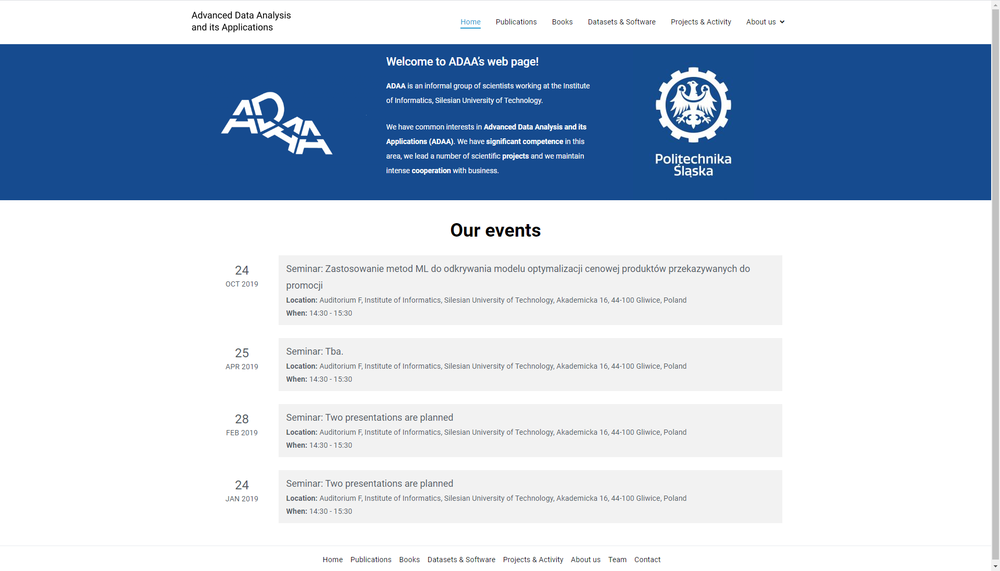
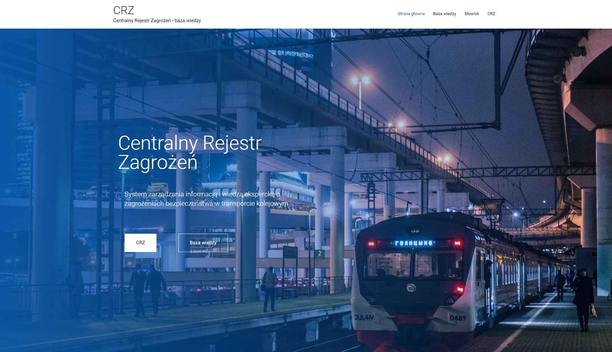
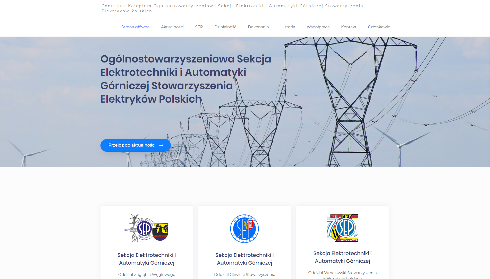
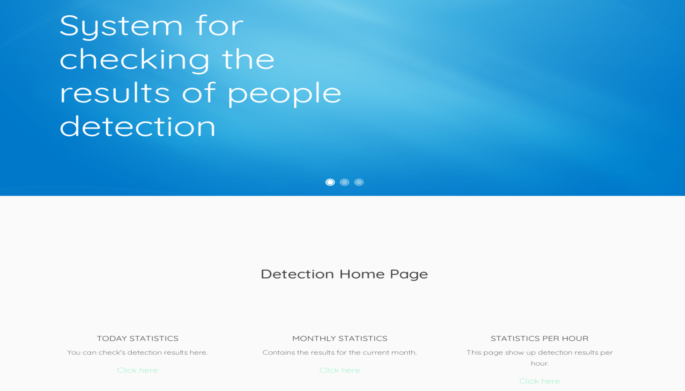

Technologies
- Technology: Java Enterprise Edition, Enterprise JavaBeans, Java Persistence API
- Frameworks: JavaServer Faces, PhpSlim, Laravel
- Database: MySQL
- Libraries: Bootstrap, PrimeFaces, PHPMailer
- Template engine: Twig, Blade
- Programming Languages: Java, C++, PHP, CSS, JavaScript, HTML5

Website based on CMS WordPress for creating ADAA (Advanced Data Analysis and its Applications). Available at: adaa.polsl.pl. Website made during summer internship.
Technologies: WordPress

Website based on CMS WordPress for the internal application of the CRZ system. Extended with a proprietary WordPress plugin to facilitate the categorization of the knowledge base. Website made during summer internship.
Technologies: WordPress

Central College of the General Association, Electronics and Mining Automation Section of the Association of Polish Electrical Engineers. Website based on CMS WordPress. Website made during summer internship.
Technologies: WordPress

A web application that focuses on detecting people in the room using the OpenCV image processing library and saves the results in a database. After loggin in, users have access to the report module.
Technologies: JavaEE, JSF, EJB, JPA, PrimeFaces, iText, OpenCV
EDUCATION
Uniwersytet Śląski w Katowicach
2017 - 2021
Wydział Nauk Ścisłych i Technicznych, Informatyka inż.
Since 2017, I am a student of the University of Silesia. In 2019, I chose the "web application design" specialization. I am currently writing an engineering thesis entitled "Automatic Detection System for the Number of People in the Room".
EXPERIENCE
Apprentice
07/2019 - 08/2019
Łukasiewicz - Instytut Technik Innowacyjnych EMAG
Apprenticeship, during which I created websites based on CMS WordPress, I created simple scripts in PHP and JavaScript, and dealt with application testing.